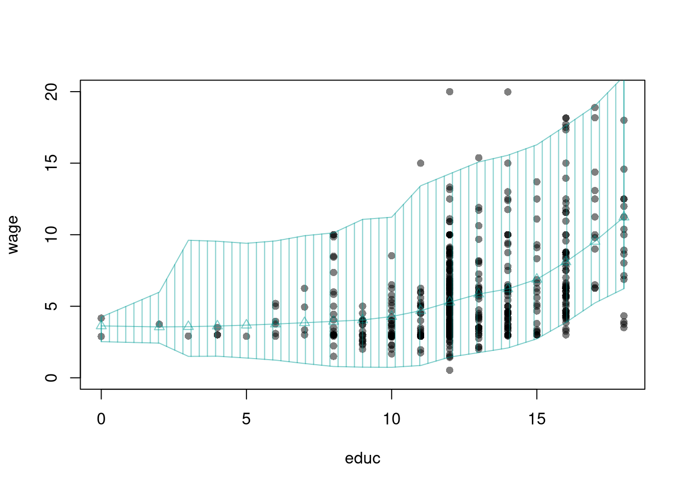
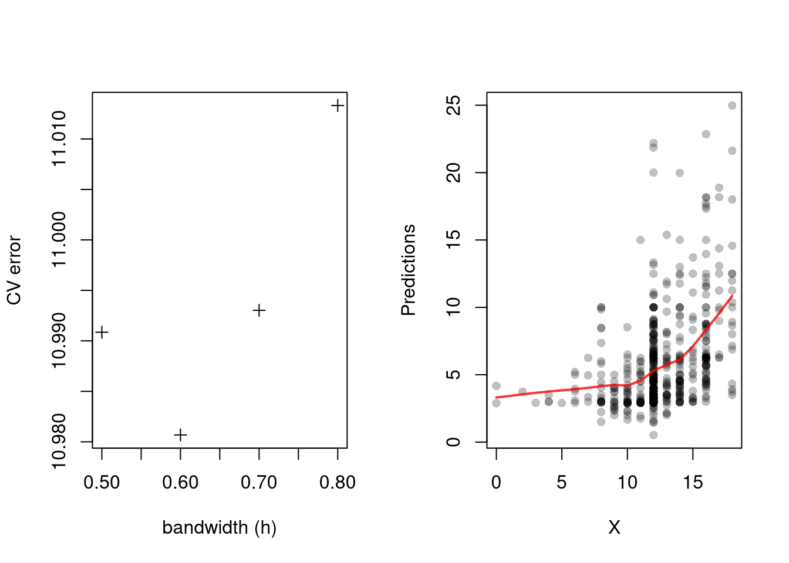
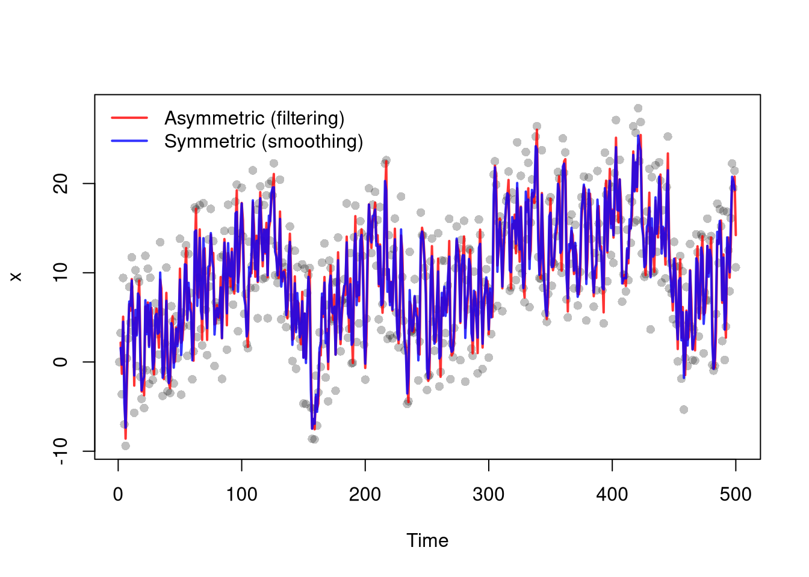
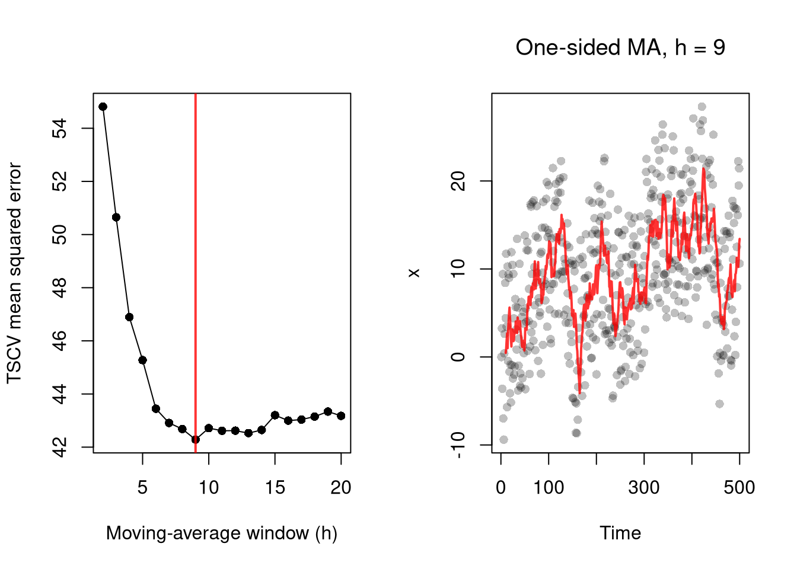
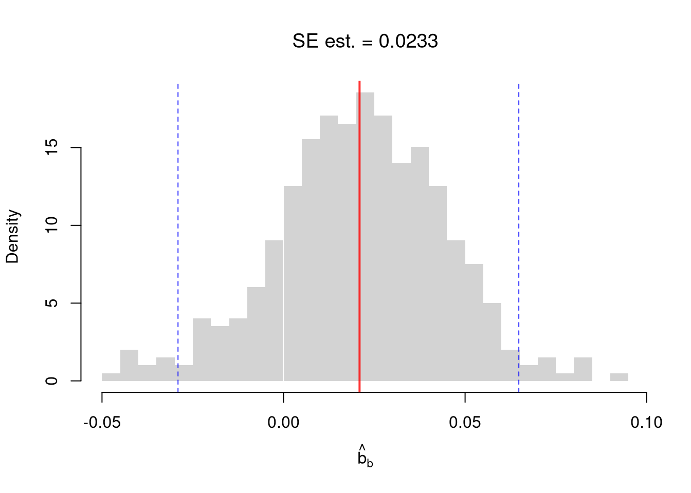

Code
# Bivariate Data from USArrests
xy <- USArrests[, c('Murder', 'UrbanPop')]
colnames(xy) <- c('y', 'x')
xy0 <- xy[order(xy[, 'x']), ]This chapter collects the remaining multivariate topics that did not fit cleanly into the preceding chapters. We cover prediction (including prediction intervals and cross-validation), time-series filtering, random subsampling, the matrix-form OLS theory and the bias of \(\hat{B}^*\), and finally multiple testing corrections, the formal remedy for the kind of search-induced false positives raised in Data Scientism.
Understanding whether we aim to describe, explain, or predict is central to empirical analysis. The three distinct purposes are to accurately describe empirical patterns, explain why the empirical patterns exist, predict what empirical patterns will exist.
| Objective | Core Question | Goal | Methods |
|---|---|---|---|
| Describe | What is happening? | Characterize patterns & facts | Summary stats, visualizations, correlations |
| Explain | Why is it happening? | Establish causal relationships & mechanisms | Theoretical models; experimentation; counterfactual reasoning |
| Predict | What will happen? | Anticipate outcomes; support decisions that affect the future | Machine learning, treatment effect forecasting, policy simulations |
Here is an example for minimum wages.
The distinctions matter, as they help you recognize that predictive accuracy or good data visualization does not equal causal insight. You can then better align statistical tools with questions. Try remembering this: Describe reality, Explain causes, Predict futures
A confidence interval for the mean \(m(x)\) does not by itself tell us how far a new observation at \(x\) might land.
Prediction intervals are useful when the question is about individuals rather than averages. We ask what wage a new worker with 12 years of schooling might actually earn, not what the average wage of such workers is. Because they also include the residual variability of \(Y_i\) around the mean, they are generally wider than a confidence interval for \(m(x)\) at the same level.
# Bivariate Data from USArrests
xy <- USArrests[, c('Murder', 'UrbanPop')]
colnames(xy) <- c('y', 'x')
xy0 <- xy[order(xy[, 'x']), ]For a nice overview of different types of intervals, see https://www.jstor.org/stable/2685212. For an in-depth view, see “Statistical Intervals: A Guide for Practitioners and Researchers” or “Statistical Tolerance Regions: Theory, Applications, and Computation”. See https://robjhyndman.com/hyndsight/intervals/ for constructing intervals for future observations in a time-series context. See Davison and Hinkley, chapters 5 and 6 (also Efron and Tibshirani, or Wehrens et al.)
## Data
library('wooldridge')
dat <- wage1[, c('wage', 'educ')]
dat <- dat[order(wage1[, 'educ']), ]
# Design Points
X0 <- unique(dat[, 'educ'])
# Regression
reg_lo <- loess(wage ~ educ, data=dat, span=.8)
preds_lo <- predict(reg_lo, newdata=data.frame(educ=X0))
# Bootstrap Residuals
n <- nrow(dat)
res_lo <- lapply(1:399, function(i){
dat_b <- dat[sample(n, replace=TRUE), ]
reg_b <- loess(wage ~ educ, data=dat_b, span=.8)
resids_b <- resid(reg_b)
cbind(e=resids_b, educ=dat_b[, 'educ'])
})
res_lo <- do.call(rbind, res_lo)
## Smooth residuals
res_fun <- function(x0, h){
# Include only residuals within h distance to x0
ki0 <- abs(res_lo[, 'educ']-x0)/h
ki0 <- dunif(ki0)/h
ei0 <- res_lo[ki0 != 0, 'e'] #subset estimates
## Local quantiles
res_i <- quantile(ei0, probs=c(.025, .975), na.rm=TRUE)
res_i
}
res_ci <- sapply(X0, res_fun, h=5)
## Prediction Interval
pi_lo1 <- preds_lo + res_ci[1, ]
pi_lo2 <- preds_lo + res_ci[2, ]
#Plot
col <- hcl.colors(3, alpha=.5)[2]
plot(wage ~ educ, pch=16, col=grey(0, .25),
data=dat, ylim=c(0, 20), main=NA)
lines(X0, preds_lo,
col=col, type='o', pch=2)
polygon( c(X0, rev(X0)),
c(pi_lo1, rev(pi_lo2)),
col=col, density=12, angle=90)
A model that fits the training data perfectly can still predict new observations badly, so we need a score that rewards out-of-sample accuracy rather than in-sample fit.
Leave-one-out cross-validation is useful as the simplest computational way to choose bandwidths, and it directly addresses an issue that plagues observational studies in the social sciences: your model explains everything and predicts nothing. The score it minimizes is an out-of-sample average, so a too-flexible model that fits in-sample noise will be penalized; minimizing prediction error is not objectively “best” but it is a defensible default when no other criterion is obviously stronger.
In practice, compare models with cross-validation (below). The preferred model is the one with best out-of-sample performance, not the one with the most flexible in-sample fit. The same idea selects bin counts and bandwidths in Local Relationships.
library(wooldridge)
# Crossvalidated bandwidth for regression
xy_mat <- data.frame(x=wage1[, 'educ'], y=wage1[, 'wage'])
## Grid Search
BWS <- c(0.5, 0.6, 0.7, 0.8)
BWS_CV <- sapply(BWS, function(h){
E_bw <- sapply(1:nrow(xy_mat), function(i){
llls <- loess(y ~ x, data=xy_mat[-i, ], span=h,
degree=1, surface='direct')
pred_i <- predict(llls, newdata=xy_mat[i, ])
e_i <- (pred_i- xy_mat[i, 'y'])
return(e_i)
})
return( mean(E_bw^2) )
})
## Plot MSE
par(mfrow=c(1, 2))
plot(BWS, BWS_CV, ylab='CV error', pch=3,
xlab='bandwidth (h)')
## Plot Optimal Predictions
h_star <- BWS[which.min(BWS_CV)]
llls <- loess(y ~ x, data=xy_mat, span=h_star,
degree=1, surface='direct')
plot(xy_mat, pch=16, col=grey(0, .25),
xlab='X', ylab='Predictions', main=NA)
pred_id <- order(xy_mat[, 'x'])
lines(xy_mat[pred_id, 'x'], predict(llls)[pred_id],
col=rgb(1, 0, 0, .8), lwd=2)
In some cases we want to estimate the level of a time series at \(t\) rather than forecast forward, and the relevant question is which neighbors we are allowed to use.
Filtering is useful for forecasting and any online use where the future is genuinely unknown at time \(t\), while smoothing produces lower-variance estimates and is the right choice for retrospective analysis where the full series is in hand. The two are otherwise built from the same kernel weights, so the only practical difference is which observations the weights are allowed to touch.
One example of filtering is Exponential Filtering (sometimes confusingly referred to as “Exponential Smoothing”) which weights only previous observations using an exponential kernel.
# Time series data
set.seed(1)
## Underlying Trend
x0 <- cumsum(rnorm(500, 0, 1))
## Observed Datapoints
x <- x0 + runif(length(x0), -10, 10)
dat <- data.frame(t=seq_along(x), x0=x0, x=x)
## Asymmetric kernel (filtering: uses current and past only)
bw1 <- c(2/3, 1/3)
s1 <- filter(x, bw1/sum(bw1), sides=1)
## Symmetric kernel (smoothing: also uses future)
bw2 <- c(1/6, 2/3, 1/6)
s2 <- filter(x, bw2/sum(bw2), sides=2)
## Plot the series with both smoothers
plot(x ~ t, data=dat, pch=16, col=grey(0, .25),
main=NA, xlab='Time', ylab='x')
lines(dat$t, s1, col=rgb(1, 0, 0, .8), lwd=2)
lines(dat$t, s2, col=rgb(0, 0, 1, .8), lwd=2)
legend('topleft', lwd=2, bty='n',
col=c(rgb(1, 0, 0, .8), rgb(0, 0, 1, .8)),
legend=c('Asymmetric (filtering)', 'Symmetric (smoothing)'))
There are several cross-validation procedures for filtering time series data (Opsomer et al. 2001). One is called time series cross-validation (TSCV), which is useful for temporally dependent data (Hart 1991; Haerdle and Vieu 1992; Bergmeir et al. 2018). Unlike ordinary cross-validation, TSCV only ever predicts a point from its past, never its future, which respects the time ordering of the data. We use it below to choose the window of a one-sided moving average.
# Time series cross-validation for a one-sided moving average
# For each window h, predict each point from the previous h points
x <- dat$x
ma_windows <- 2:20
tscv_mse <- sapply(ma_windows, function(h){
## Weight the previous h points equally, 0 weight on the current point
ma_coefs <- c(0, rep(1/h, h))
x_pred <- filter(x, ma_coefs, sides=1)
mean((x - x_pred)^2, na.rm=TRUE)
})
## CV-optimal window
h_star <- ma_windows[which.min(tscv_mse)]
par(mfrow=c(1, 2))
## Plot CV error against window size
plot(ma_windows, tscv_mse, type='o', pch=16, main=NA,
xlab='Moving-average window (h)', ylab='TSCV mean squared error')
abline(v=h_star, col=rgb(1, 0, 0, .8), lwd=2)
## Plot the series with the CV-optimal filter
x_smooth <- filter(x, c(0, rep(1/h_star, h_star)), sides=1)
plot(x ~ t, data=dat, pch=16, col=grey(0, .25), main=NA,
xlab='Time', ylab='x')
lines(dat$t, x_smooth, col=rgb(1, 0, 0, .8), lwd=2)
title(paste0('One-sided MA, h = ', h_star), font.main=1)
## See also https://robjhyndman.com/hyndsight/tscvexample/We often start with a predictive statement, asking how likely a signal \(Y_i\) is given a state \(X_i\). The question we actually want answered runs the other way.
Bayes’ theorem is useful as the bridge between predictive and inferential statements: given the conditional probabilities a test or model supplies (the likelihood) and a baseline rate (the prior), it returns the probability that interests the decision-maker (the posterior). The three ingredients have standard names:
For two states, posterior odds are prior odds times a likelihood ratio, which is often the easiest form for hand calculation.
For a concrete example, suppose a screening test has sensitivity 0.90 and false positive rate 0.08, while prevalence is 0.12: \[\begin{eqnarray} Prob(Y_i=1|X_i=1)=0.90,\quad Prob(Y_i=1|X_i=0)=0.08,\quad Prob(X_i=1)=0.12, \end{eqnarray}\] where \(X_i=1\) means “condition present” and \(Y_i=1\) means “test positive”.
Then \[\begin{eqnarray} Prob(X_i=1|Y_i=1) &=& \frac{0.90\times0.12}{0.90\times0.12 + 0.08\times0.88} \approx 0.605. \end{eqnarray}\] Even with a good test, posterior probability depends strongly on prevalence.
# States: X in {0, 1}, signal Y in {0, 1}
# Prior Prob(X_i=1)
p_x1 <- 0.12
# Test characteristics
p_y1_x1 <- 0.90
p_y1_x0 <- 0.08
# Law of total probability for Prob(Y_i=1)
p_y1 <- p_y1_x1 * p_x1 + p_y1_x0 * (1 - p_x1)
# Bayes posterior Prob(X_i=1 | Y_i=1)
p_x1_y1 <- (p_y1_x1 * p_x1) / p_y1
p_x1_y1
## [1] 0.6053812
# Also compute Prob(X_i=1 | Y_i=0)
p_y0_x1 <- 1 - p_y1_x1
p_y0_x0 <- 1 - p_y1_x0
p_y0 <- p_y0_x1 * p_x1 + p_y0_x0 * (1 - p_x1)
p_x1_y0 <- (p_y0_x1 * p_x1) / p_y0
p_x1_y0
## [1] 0.01460565Random subsampling is one of many hybrid approaches that tries to combine the best of the core methods: Bootstrap and Jackknife. It draws subsamples of size \(m < n\) without replacement, repeating the procedure \(B\) times. The next table summarizes how the three resampling strategies differ.
| Sample Size per Iteration | Number of Iterations | Resample | |
|---|---|---|---|
| Bootstrap | \(n\) | \(B\) | With Replacement |
| Jackknife | \(n-1\) | \(n\) | Without Replacement |
| Random Subsample | \(m < n\) | \(B\) | Without Replacement |
xy <- USArrests[, c('Murder', 'UrbanPop')]
colnames(xy) <- c('y', 'x')
reg <- lm(y ~ x, data=xy)
coef(reg)
## (Intercept) x
## 6.41594246 0.02093466
# Random Subsamples
rs_regs <- lapply(1:399, function(b){
b_id <- sample( nrow(xy), nrow(xy)-10, replace=FALSE)
xy_b <- xy[b_id, ]
reg_b <- lm(y ~ x, data=xy_b)
})
rs_coefs <- sapply(rs_regs, coef)['x', ]
rs_se <- sd(rs_coefs)
hist(rs_coefs, breaks=25,
main=NA, border=NA, freq=FALSE,
xlab=expression(hat(b)[b]))
title(paste0('SE est. = ', round(rs_se, 4)), font.main=1)
abline(v=coef(reg)['x'], lwd=2, col=rgb(1, 0, 0, .8))
rs_ci_percentile <- quantile(rs_coefs, probs=c(.025, .975))
abline(v=rs_ci_percentile, lty=2, col=rgb(0, 0, 1, .8))
First, note that you can use matrix algebra in R
x_mat1 <- matrix( seq(2, 7), 2, 3)
x_mat1
## [,1] [,2] [,3]
## [1,] 2 4 6
## [2,] 3 5 7
x_mat2 <- matrix( seq(4, -1), 2, 3)
x_mat2
## [,1] [,2] [,3]
## [1,] 4 2 0
## [2,] 3 1 -1
x_mat1*x_mat2 #NOT classical matrix multiplication
## [,1] [,2] [,3]
## [1,] 8 8 0
## [2,] 9 5 -7
x_mat1^x_mat2
## [,1] [,2] [,3]
## [1,] 16 16 1.0000000
## [2,] 27 5 0.1428571
tcrossprod(x_mat1, x_mat2) #x_mat1 %*% t(x_mat2)
## [,1] [,2]
## [1,] 16 4
## [2,] 22 7
crossprod(x_mat1, x_mat2)
## [,1] [,2] [,3]
## [1,] 17 7 -3
## [2,] 31 13 -5
## [3,] 45 19 -7Second, note that you can apply functions to matrices
sum_squared <- function(x1, x2) {
y <- (x1 + x2)^2
return(y)
}
sum_squared(x_mat1, x_mat2)
## [,1] [,2] [,3]
## [1,] 36 36 36
## [2,] 36 36 36
solve(x_mat1[1:2, 1:2])
## [,1] [,2]
## [1,] -2.5 2
## [2,] 1.5 -1Third, note that we can conduct OLS regressions efficiently using matrix algebra. Grouping the coefficients as a vector \(B=(b_0 ~~ b_1 ~~... ~~ b_{K})\), we want to find coefficients that minimize the sum of squared errors. The linear model has a fairly simple solution for \(\hat{B}^{*}\) if you know linear algebra. Denoting \(\hat{\mathbf{X}}_{i} = [1~~ \hat{X}_{i1} ~~...~~ \hat{X}_{iK}]\) as a row vector, we can write the model as \(\hat{Y}_{i} = \hat{\mathbf{X}}_{i}B + e_{i}\). We can then write the model in matrix form \[\begin{eqnarray} \hat{Y} &=& \hat{\textbf{X}}B + E \\ \hat{Y} &=& \begin{pmatrix} \hat{Y}_{1} \\ \vdots \\ \hat{Y}_{N} \end{pmatrix} \quad \hat{\textbf{X}} = \begin{pmatrix} 1 & \hat{X}_{11} & ... & \hat{X}_{1K} \\ & \vdots & & \\ 1 & \hat{X}_{n1} & ... & \hat{X}_{nK} \end{pmatrix} \end{eqnarray}\] Minimizing the squared errors: \(\min_{B} e_{i}^2 = \min_{B} (E' E)\), yields coefficient estimates and predictions \[\begin{eqnarray} \hat{B^{*}} &=& (\hat{\textbf{X}}'\hat{\textbf{X}})^{-1}\hat{\textbf{X}}'\hat{Y}\\ \hat{y} &=& \hat{\textbf{X}} \hat{B^{*}} \\ \hat{E} &=& \hat{Y} - \hat{y} \\ \end{eqnarray}\]
# Manually compute B_hat = (X'X)^{-1} X'Y step by step.
Y <- USArrests[, 'Murder']
X <- USArrests[, c('Assault', 'UrbanPop')]
X <- as.matrix(cbind(1, X))
XtX <- t(X) %*% X # K+1 by K+1 cross-product
XtXi <- solve(XtX) # invert
XtY <- t(X) %*% Y # K+1 by 1 cross-product with Y
Bhat <- XtXi %*% XtY # K+1 coefficient vector
c(Bhat)
## [1] 3.20715340 0.04390995 -0.04451047
# Confirms the same answer as lm()
coef(lm(Murder ~ Assault + UrbanPop, data=USArrests))
## (Intercept) Assault UrbanPop
## 3.20715340 0.04390995 -0.04451047With matrix notation, we can established that OLS is an unbiased estimator for additively separable and linear relationships. Assume \[\begin{eqnarray} Y_{i} = X_{i} \beta + \epsilon_{i} &\quad& \mathbb{E}[\epsilon_{i} | X_{i} ]=0, \end{eqnarray}\] then notice that \[\begin{eqnarray} B^{*} = (\mathbf{X}'\mathbf{X})^{-1}\mathbf{X}'Y = (\mathbf{X}'\mathbf{X})^{-1}\mathbf{X}'(\mathbf{X}\beta + \epsilon) = \beta + (X'X)^{-1}X'\epsilon\\ \mathbb{E}\left[ B^{*} \right] = \mathbb{E}\left[ (\mathbf{X}'\mathbf{X})^{-1}\mathbf{X}'Y \right] = \beta + (\mathbf{X}'\mathbf{X})^{-1}\mathbb{E}\left[ \mathbf{X}'\epsilon \right] = \beta \end{eqnarray}\]
If we do not know that the data generating process is additively separable and linear, then we do not know how to interpret \(\hat{B}^{*}\) (outside of a very mathematical expression, which I do not cover here). If we run a local linear regression analysis, on the other hand, we get the estimator \[\begin{eqnarray} \beta(\mathbf{x}) &=& [\mathbf{X}'\mathbf{K}(\mathbf{x})\mathbf{X}]^{-1} \mathbf{X}'\mathbf{K}(\mathbf{x})Y \\ \mathbf{K}(\mathbf{x}) &=& \begin{pmatrix} k\left(\mathbf{X}_{1}, \mathbf{x}, \mathbf{H}\right) & ... & 0\\ \vdots & & \\ 0 & ... & k\left(\mathbf{X}_{n}, \mathbf{x}, \mathbf{H}\right) \end{pmatrix}, \end{eqnarray}\] which is unbiased far more often.
The weight matrix \(\mathbf{K}(\mathbf{x})\) is \(n \times n\) and diagonal, holding one weight per observation rather than one per variable. Each weight multiplies the univariate kernels across the \(K\) variables, \[\begin{eqnarray} k\left(\mathbf{X}_{i}, \mathbf{x}, \mathbf{H}\right) &=& \prod_{k=1}^{K} k\left(\frac{X_{ik}-x_{k}}{h_{k}}\right), \end{eqnarray}\] where \(h_{k}\) is the \(k\)th diagonal element of the bandwidth matrix \(\mathbf{H}\) from Local Relationships. So observation \(i\) gets a large weight only when it is close to \(\mathbf{x}\) in every variable, and \(h_{k}\) sets how close it has to be in variable \(k\).
When you test one hypothesis at the \(5\%\) level, there is a \(5\%\) chance of a false positive. When you test many hypotheses, those chances accumulate. This is the statistical engine behind much of Data Scientism: search long enough and something will look significant.
A single \(5\%\) test promises a \(5\%\) false-positive rate, but a researcher rarely stops at one test. The relevant question is the chance of any false positive across the whole batch.
The FWER is useful as the headline number for any procedure that runs many hypothesis tests: it tells you how likely you are to declare something “significant” by chance even when every null is true. With \(\alpha=0.05\), one test has FWER \(0.05\), but \(K=10\) tests give \(1-0.95^{10}\approx 0.40\) and \(K=100\) tests give \(1-0.95^{100}\approx 0.99\). Almost any dataset will yield a “significant” result if you test it enough ways.
# Family-wise error rate grows with the number of tests
alpha <- 0.05
K <- c(1, 5, 10, 20, 50, 100)
fwer <- 1 - (1-alpha)^K
cbind(K, fwer=round(fwer, 3))
## K fwer
## [1,] 1 0.050
## [2,] 5 0.226
## [3,] 10 0.401
## [4,] 20 0.642
## [5,] 50 0.923
## [6,] 100 0.994To hold the family-wise error rate down to \(\alpha\), we have to make each individual test stricter. Exactly how strict matters for whether real effects survive.
The Bonferroni correction is useful as the simplest valid adjustment, since it guarantees \(\text{FWER} \leq \alpha\) under any dependence structure between tests. It is conservative, though, and with many tests it can miss real effects. The Holm correction is uniformly more powerful than Bonferroni while still controlling the FWER, so it is generally preferred when only family-wise control is wanted.
# Five p-values from five separate tests
pvals <- c(0.001, 0.013, 0.021, 0.04, 0.21)
# Adjust for multiple testing
cbind(
raw = pvals,
bonferroni = p.adjust(pvals, method='bonferroni'),
holm = p.adjust(pvals, method='holm'))
## raw bonferroni holm
## [1,] 0.001 0.005 0.005
## [2,] 0.013 0.065 0.052
## [3,] 0.021 0.105 0.063
## [4,] 0.040 0.200 0.080
## [5,] 0.210 1.000 0.210A significant global test says some group differs, but the question we usually care about is which one. Asking each pair separately reintroduces the multiple-testing problem we just controlled at the global level.
Post-hoc tests are useful as the standard follow-up to a significant ANOVA \(F\)-test (see Comparing Multiple Groups): they pinpoint the group or groups responsible for the global rejection without inflating the false-positive rate. The number of comparisons grows quadratically in \(G\), so the per-pair threshold gets noticeably stricter as soon as there are more than a handful of groups.
# Global test: do murder rates differ by region?
dat <- USArrests
dat$Region <- state.region
summary(aov(Murder ~ Region, data=dat))
## Df Sum Sq Mean Sq F value Pr(>F)
## Region 3 391.2 130.4 11.14 1.28e-05 ***
## Residuals 46 538.3 11.7
## ---
## Signif. codes: 0 '***' 0.001 '**' 0.01 '*' 0.05 '.' 0.1 ' ' 1# Post-hoc: which regions differ? (pairwise t-tests, Holm-adjusted)
pairwise.t.test(dat$Murder, dat$Region, p.adjust.method='holm')
##
## Pairwise comparisons using t tests with pooled SD
##
## data: dat$Murder and dat$Region
##
## Northeast South North Central
## South 7e-05 - -
## North Central 0.67251 0.00017 -
## West 0.36895 0.00259 0.67251
##
## P value adjustment method: holm# Tukey's Honest Significant Differences:
# pairwise confidence intervals that already account for all comparisons
TukeyHSD(aov(Murder ~ Region, data=dat))
## Tukey multiple comparisons of means
## 95% family-wise confidence level
##
## Fit: aov(formula = Murder ~ Region, data = dat)
##
## $Region
## diff lwr upr p adj
## South-Northeast 7.006250 3.206920 10.805580 0.0000673
## North Central-Northeast 1.000000 -3.020833 5.020833 0.9104265
## West-Northeast 2.330769 -1.623231 6.284769 0.4047789
## North Central-South -6.006250 -9.488393 -2.524107 0.0001909
## West-South -4.675481 -8.080233 -1.270728 0.0035034
## West-North Central 1.330769 -2.319509 4.981047 0.7660715Comment the script you wrote for this chapter, then restart R and check that it runs from a clean session, then check the script with AI as explained in Working with AI. Write three sentences from memory on the main statistical idea of this chapter, and ask the assistant what is wrong, vague, or missing. Finish with your own questions about whatever you found hardest.
Explain the distinction between description, explanation, and prediction using a concrete example other than minimum wages. For each objective, state what statistical tools you would use and what kind of evidence would be needed.
Using the USArrests dataset, regress Murder on Assault and UrbanPop. Compute \(\hat{B}^{*}\) both with lm() and manually via \((\hat{\mathbf{X}}'\hat{\mathbf{X}})^{-1}\hat{\mathbf{X}}'\hat{Y}\) using matrix operations in R. Verify that the two approaches give the same coefficients.
Using the wage1 dataset from the wooldridge package, fit a loess regression of wage on educ for three different span values (e.g., 0.4, 0.6, 0.8). Use leave-one-out cross-validation to compute the mean squared prediction error for each span. Which span minimizes prediction error, and does a more flexible fit always predict better?
A researcher runs \(K=20\) independent tests, each at the \(5\%\) level. Compute the family-wise error rate \(1-(1-0.05)^{20}\), and find the per-test Bonferroni threshold \(\alpha/K\) that holds the family-wise rate at \(5\%\). Then create a vector of 20 \(p\)-values, apply p.adjust() with the 'bonferroni' and 'holm' methods, and report how many results remain significant under each.
np package vignette for nonparametric kernel estimation and bandwidth selection.This chapter wrapped up the multivariate part with the describe/explain/predict taxonomy, prediction intervals and cross-validation, time-series filtering, random subsampling, the matrix form of OLS, and multiple-testing corrections. The matrix-OLS sense-check on USArrests made the algebra concrete: computing \(\hat{B}^{*}=(\mathbf{X}'\mathbf{X})^{-1}\mathbf{X}'\hat{Y}\) step by step with XtX <- t(X) %*% X, XtXi <- solve(XtX), and Bhat <- XtXi %*% XtY recovers exactly the coefficient vector that lm(Murder ~ Assault + UrbanPop, data=USArrests) returns. These tools close the loop with earlier chapters: cross-validation chooses models, multiple-testing corrections discipline the search problem flagged in Data Scientism, and the matrix form makes the OLS algebra of Multiple Regression explicit. The appendices that follow revisit reproducible workflows and probability theory in greater depth.